January – March
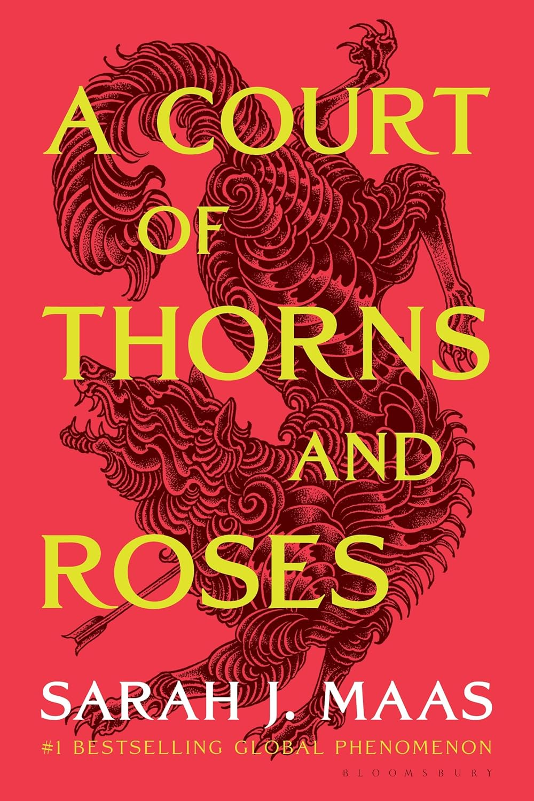
A Court of Thorns and Roses
Sarah J. Maas's breakout fantasy romance follows Feyre, a mortal huntress who kills a wolf in the woods and discovers it was a faerie in disguise—triggering an ancient treaty that drags her into the glittering, deadly world of the fae. The book is essentially a Beauty and the Beast retelling laced with territorial politics, shape-shifting High Lords, and enough sexual tension to fuel a small power grid; it's catnip for readers who want their fantasy worlds dangerous and their love interests brooding. Hulu is developing the series with Maas as an executive producer, a smart move given how fiercely protective her fanbase is about character arcs and the slow-burn romance between Feyre and Tamlin (and later, Rhysand). No cast has been announced, but expect the internet to have Opinions the moment names drop. Read the book first—Maas's world-building is intricate enough that you'll want the full map in your head, and the series will inevitably compress or streamline subplots that matter deeply to the story's emotional payoff.
April – June

The Housemaid
McFadden's thriller follows Millie, a woman with a hidden past who takes a live-in housemaid position with the Winchesters—only to discover that her seemingly perfect employer Nina is unraveling, and the family's pristine facade conceals something far darker. The book became a TikTok phenomenon for its propulsive pacing and third-act twist that reframes everything, making it catnip for readers who devoured *Gone Girl* and *The Woman in the Window*. Paul Feig directs Sydney Sweeney and Amanda Seyfried in what Lionsgate is positioning as a rare theatrical psychological thriller, banking on the novel's rabid fanbase and Sweeney's post-*Euphoria* heat. Production wrapped late 2025 with promotional stills emphasizing claustrophobic interiors and the two leads locked in a battle of wills. Read the book first—McFadden's twist depends entirely on narrative sleight-of-hand that a film adaptation will struggle to replicate, and you'll want to experience that jaw-drop moment on the page before Feig shows his hand on screen.

Project Hail Mary
Andy Weir's follow-up to The Martian is a first-contact thriller about a high school science teacher who wakes up alone on a spaceship with no memory, tasked with solving an extinction-level threat to Earth—it's got the same propulsive problem-solving as his debut but with higher emotional stakes and an alien sidekick. Phil Lord and Christopher Miller (Spider-Verse, The Lego Movie) directing Ryan Gosling is an inspired pairing: they excel at finding heart in high-concept premises, and Gosling can sell both the MacGyver ingenuity and the loneliness. MGM is betting big on a June 2026 release, pouring resources into rendering Weir's meticulously imagined zero-gravity sequences and bioluminescent alien biology. Read the book first—the film will inevitably compress Weir's methodical scientific detective work, and half the pleasure is piecing together the mystery alongside the protagonist before Hollywood's pacing takes over.
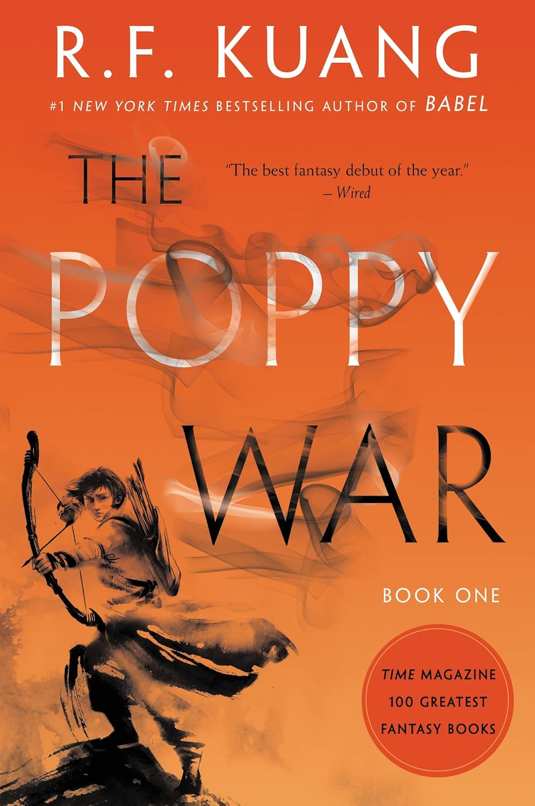
The Poppy War
R.F. Kuang's debut follows Rin, a war orphan who aces her way into a military academy only to discover she can summon gods of fire and destruction—a shamanic power that turns her into a weapon during a genocidal invasion modeled on the Second Sino-Japanese War. Starz is developing this as a series, banking on the success of grimdark fantasy but facing the challenge of adapting a book that doesn't flinch from depicting atrocities, drug addiction, and the moral collapse of its protagonist. With no cast or director attached and a vague Q2 2027 target, this feels early in development, though the studio's track record with 'Outlander' suggests they might handle the scope. The novel's allegorical weight—Kuang wrote her thesis on genocide into a fantasy framework—will almost certainly be diluted for television, and the book's third act, where Rin becomes genuinely monstrous, is the kind of thing networks tend to soften. Read the book first; Kuang earned her reputation by refusing to make war palatable, and you'll want to experience that uncompromised vision before Starz decides how much darkness American audiences can handle.
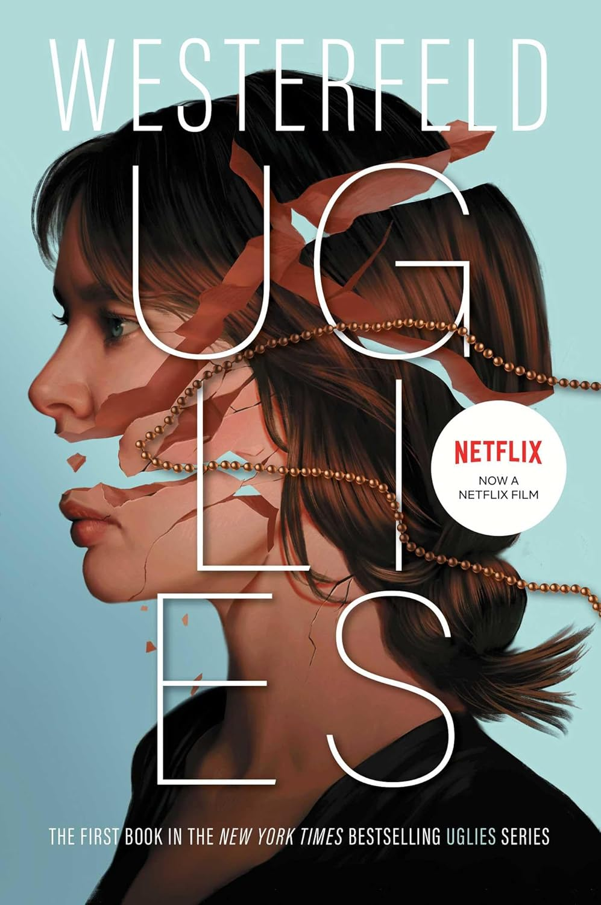
The Uglies
Scott Westerfeld's 2005 novel imagines a future where mandatory plastic surgery at sixteen divides society into Uglies and Pretties—a premise that felt prescient then and cuts even deeper now in our Instagram age. The book works because Westerfeld commits fully to the world-building, inventing slang like "bubbly" and "bogus" that teenage readers either loved or found insufferable, and because protagonist Tally Youngblood's journey from conformist to rebel feels earned rather than preordained. Netflix handed the project to McG (yes, the Charlie's Angels director), with Joey King producing and starring after years of trying to get it made—a passion project that could go either way depending on whether they preserve the book's satirical edge or sand it down into generic YA action. The novel's strength is its slow-burn exploration of beauty standards and social control, which a two-hour film will likely compress into chase sequences and romance. Read the book first: Westerfeld's world requires patience to appreciate, and you'll want to experience his version before McG's.
July – September

The Thursday Murder Club
Richard Osman's debut novel follows four septuagenarians in a British retirement village who meet weekly to investigate cold cases—until a real murder lands in their lap. The book works because Osman, a longtime British TV producer, understands pacing and character voice: each member of the club gets distinct quirks without tipping into caricature, and the mystery itself plays fair with readers. Netflix has assembled a dream cast—Helen Mirren, Pierce Brosnan, Ben Kingsley—and handed the project to Chris Columbus, whose Home Alone and Harry Potter credentials suggest he knows how to balance whimsy with stakes. The risk here is that Columbus's sentimentality could smother Osman's dry wit, and that a single film will flatten what works best as an ensemble piece across multiple cases. Read the book first: Osman's prose has a specific rhythm that a two-hour Netflix movie, however charming, won't replicate.

The Odyssey
Homer's foundational epic tracks Odysseus through a decade of divine punishment, cyclops encounters, and temptation by sirens as he struggles to return to Ithaca after the Trojan War—it's the template for every hero's journey since. Christopher Nolan directing Matt Damon as Odysseus, with Zendaya likely as Athena and a stacked ensemble (Holland, Hathaway, Pattinson), positions this as Universal's next Oppenheimer-scale prestige swing. The poem itself is episodic, repetitive, and demands patience with Bronze Age values, but its influence on Western literature is unmatched. Read the Fagles or Wilson translation first—Nolan's structural games will land harder if you know which pieces of the myth he's rearranging.
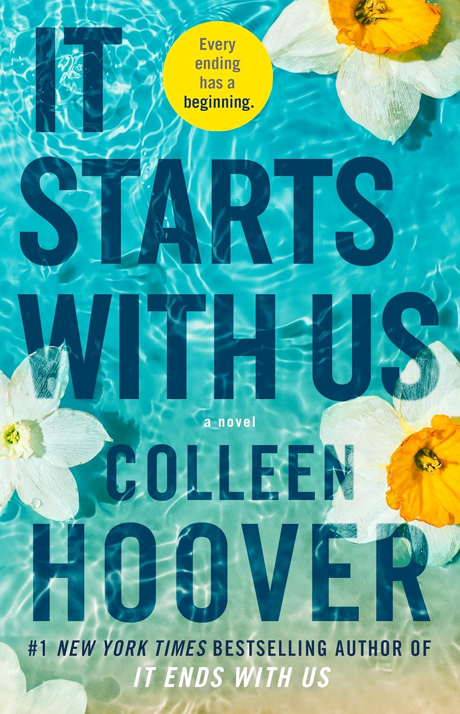
It Starts with Us
Colleen Hoover's sequel follows Lily Bloom as she navigates new love with Atlas Corrigan while co-parenting with her abusive ex-husband — it's comfort reading for the BookTok generation, heavy on internal monologue and romantic wish fulfillment. Sony greenlit this follow-up before the first film even premiered, banking on Hoover's ability to move units (she outsold the Bible in 2022), and while Blake Lively's return seems likely given her producer credit, the production has been unusually quiet about confirmed casting. The studio is treating this as a franchise play rather than prestige adaptation, which means expect a PG-13 gloss over the domestic violence themes that gave the source material its emotional weight. Read the book first only if you're already invested in Lily's story from 'It Ends with Us' — this is purely for completists, and the film will likely deliver the same cathartic beats without requiring you to spend eight hours inside one woman's anxious thought spirals.
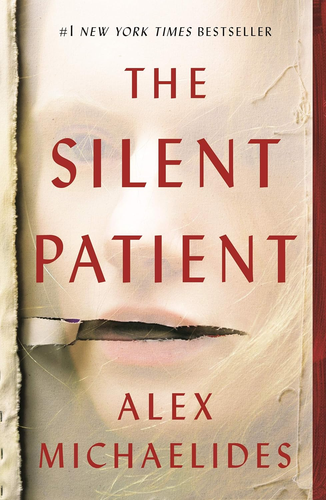
The Silent Patient
Alex Michaelides' debut thriller follows Alicia Berenson, a painter who shoots her husband five times in the face and then stops speaking entirely, and Theo Faber, the psychotherapist determined to get her to talk—a premise that works because Michaelides structures it as a genuine puzzle box, not just a gimmick. Annapurna's involvement suggests they see prestige potential here, and Alicia Vikander is smart casting for a role that demands someone who can convey volumes through silence, though no director is attached yet and a September 2026 date feels optimistic for a project still this early. The book became a runaway bestseller because of its final-act reveal, which reconfigures everything you thought you understood about both characters. Read the book first—the twist is the entire point, and once you know it, there's no reason to watch someone else dramatize what you've already experienced.
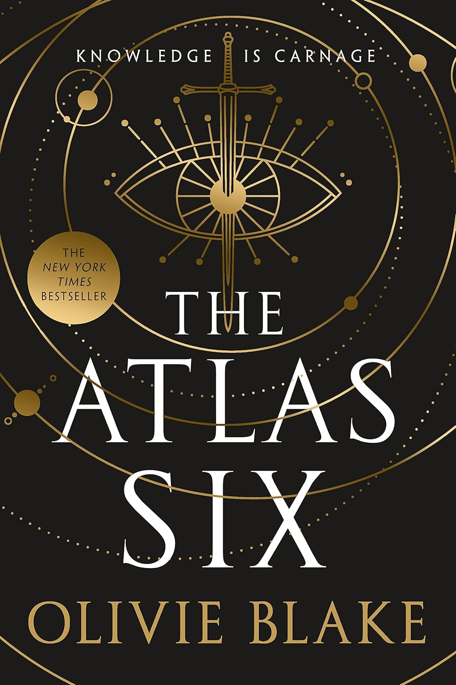
The Atlas Six
Olivie Blake's dark academia thriller follows six magically gifted scholars recruited to the Alexandrian Society, a secret organization guarding lost knowledge — think if Donna Tartt wrote about wizards with actual powers competing in lethal trials. Amazon is betting on the book's TikTok-fueled success (it started as a self-published phenomenon before traditional publication) to launch a fantasy franchise for Prime Video, though no director or cast has been announced and the late 2027 window suggests early development. The novel's appeal lies in Blake's morally gray characters and philosophical debates about power, which could easily get flattened into generic chosen-one plotting by risk-averse streaming executives. Read the book first — Blake's voice is acidic and specific, and you'll want to know what gets lost in translation when Amazon tries to make this palatable for mass audiences.
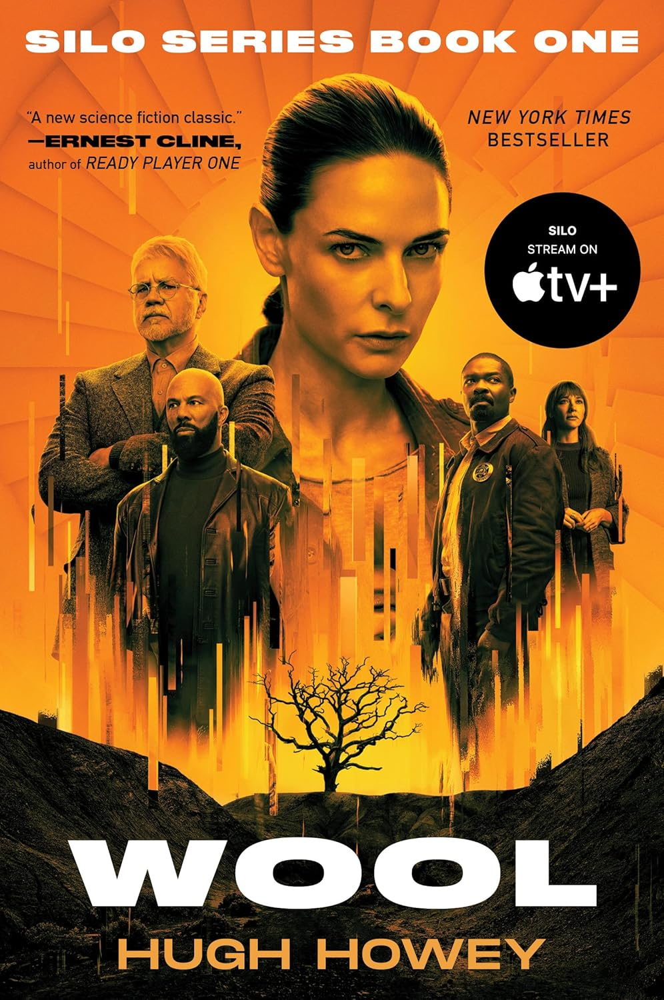
Silo (Season 2)
Hugh Howey's Wool trilogy is post-apocalyptic sci-fi for readers who prefer claustrophobic dread to space opera — ten thousand survivors packed into a subterranean silo, forbidden from asking why they're there. Apple TV+ turned it into one of their most expensive productions, with Rebecca Ferguson leading a cast that includes Tim Robbins and Common, all shot in massive practical sets that make the silo feel genuinely oppressive. Season 2 will adapt Shift, the prequel that reveals how the silos came to exist, which means flashbacks to a pre-collapse world and answers to questions Season 1 deliberately withheld. The show's production design is legitimately stunning, but Howey's prose does something television can't quite replicate: it makes you feel the weight of all that concrete overhead. Read Wool first — it's a self-contained story that works whether or not you continue to the sequels, and waiting two years for answers Apple TV+ already filmed seems masochistic.
October – December

Verity
Colleen Hoover's departure from romance into psychological thriller territory follows Lowen Ashleigh, a struggling writer hired to complete a bestselling author's series after an accident leaves her incapacitated—only to discover an unpublished autobiography revealing disturbing truths about the woman's marriage and children. Michael Showalter (The Eyes of Tammy Faye) directs Anne Hathaway as the bedridden Verity Crawford and Dakota Johnson as Lowen, with Josh Hartnett as Verity's husband Jeremy, caught between two women and competing versions of reality. The novel became a BookTok phenomenon for its genuinely unsettling manuscript-within-a-manuscript structure and a final-page twist that has readers arguing over what actually happened. Read the book first—Hoover constructs the story so that you're never sure whether you're reading truth or performance, and the film will inevitably have to choose an interpretation that the novel deliberately refuses to provide.
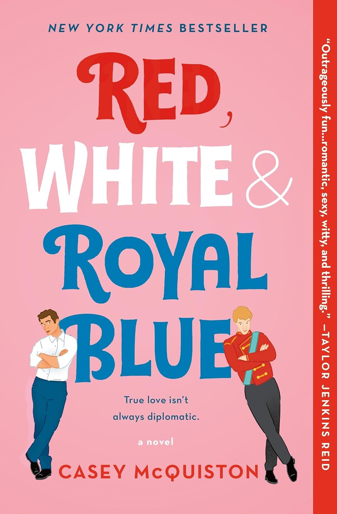
Red, White & Royal Blue 2
Casey McQuiston's sequel continues the romance between Alex Claremont-Diaz and Prince Henry, exploring their relationship beyond the honeymoon phase with McQuiston's trademark blend of political satire and emotional vulnerability—essential reading for anyone who found the first book's mix of rom-com banter and queer joy irresistible. Amazon Prime Video is betting big on director Matthew López's return alongside Taylor Zakhar Perez and Nicholas Galitzine, capitalizing on the first film's unexpected streaming dominance and rabid fandom. Filming wrapped mid-2025, with Amazon positioning this as a flagship title for their fall 2026 slate, a rare vote of confidence for a literary romance sequel. McQuiston's prose gives these characters an interiority and wit that film adaptations inevitably compress—read the book first to catch the full texture of their evolving dynamic before the movie distills it into its most cinematic moments.
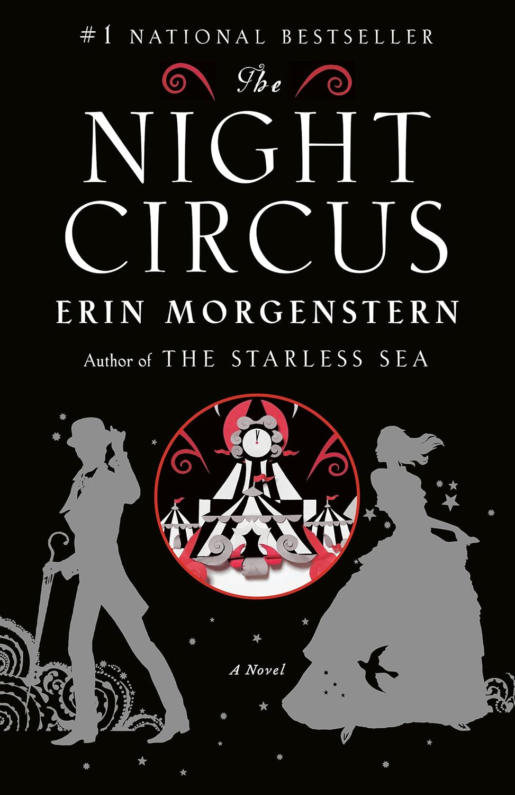
The Night Circus
Erin Morgenstern's debut novel follows two young illusionists bound since childhood to compete in a duel of magical prowess, with a Victorian-era circus as their arena and the lives of its performers as collateral damage. HBO is betting on this as a prestige fantasy project, reportedly allocating a substantial budget to recreate the circus's black-and-white striped tents and impossible attractions—think Jonathan Strange meets Carnival Row production values. The network has been developing this since 2019, cycling through multiple showrunners, which suggests either careful stewardship or creative turbulence. With no director or cast announced eighteen months before the planned premiere, this feels more aspirational than imminent. Read the book first: Morgenstern's prose is deliberately slow and atmospheric, structured as a series of vignettes rather than propulsive plot, and if HBO leans into spectacle over mood, you'll want to have experienced the original's hypnotic pacing on your own terms.
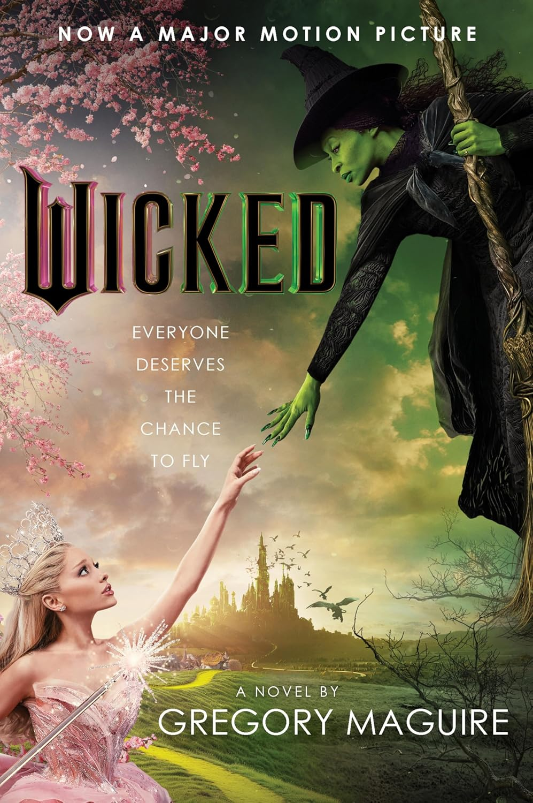
Wicked Part Two
Gregory Maguire's 'Wicked' is a political fantasy that reimagines Elphaba, the Wicked Witch of the West, as a green-skinned radical fighting systemic injustice in Oz — darker, stranger, and more morally ambiguous than the Broadway musical it inspired. Jon M. Chu's two-part adaptation, with Cynthia Erivo as Elphaba and Ariana Grande as Glinda, follows the musical's structure rather than Maguire's novel, trading the book's adult cynicism for soaring ballads and Technicolor spectacle. Part One was a box office phenomenon in 2024, and Universal has positioned Part Two for another Thanksgiving tentpole run in 2026, banking on the same combination of vocal firepower and visual excess. Read the book first if you want the sharper, more unsettling version of this story — the films are gorgeous crowd-pleasers, but Maguire's novel is the one that asks harder questions about power, complicity, and who gets to write history.

The Seven Husbands of Evelyn Hugo
Taylor Jenkins Reid's novel follows aging Hollywood legend Evelyn Hugo as she finally reveals the truth about her seven marriages to an unknown magazine reporter—a story about ambition, queerness in Old Hollywood, and the price of stardom. Netflix has tapped Lesli Linka Glatter (Homeland, Mad Men) to direct this series adaptation, which arrives in December 2026 with no cast announced yet, despite fervent online speculation about who could embody the bisexual icon at the story's center. The book's nonlinear structure and intimate first-person revelations make it ideal for a limited series format, though Reid's prose carries an emotional precision that's difficult to translate to screen. Read the book first—Evelyn's voice is the entire point, and you'll want to form your own vision of her before Netflix casts someone who inevitably won't match the version in your head.

Fourth Wing
Rebecca Yarros's Fourth Wing follows Violet Sorrengail, a physically fragile scribe's daughter forced into Basgiath War College, where dragon riders are forged through lethal trials and political intrigue—think if Sarah J. Maas wrote Top Gun with dragons and considerably more bodice-ripping. Amazon Prime Video secured the rights after the book became a genuine BookTok phenomenon, moving over 3 million copies and spawning a devoted fandom that dissects every dragon bond and romantic beat. The studio is treating this as a potential Game of Thrones-scale franchise, though no director or cast has been announced and the late 2027 target feels optimistic given the CGI demands. Read the book first—Yarros builds tension through Violet's internal monologue and the specific magic system's rules, elements that rarely survive the transition to screen, and you'll want to experience the romance arc's escalation at the pace she intended rather than condensed into eight episodes.

The Electric State
Simon Stålenhag's 'The Electric State' is a haunting illustrated narrative—closer to a visual tone poem than a traditional novel—depicting a teenage girl and her toy robot crossing a decayed 1990s America where massive drone husks rust in the desert. The Russo brothers (Avengers: Endgame, Captain America: The Winter Soldier) are directing with a reported $320 million budget, Netflix's largest to date, banking on Millie Bobby Brown, Chris Pratt, and an ensemble that includes Ke Huy Quan and Giancarlo Esposito to anchor what's essentially a post-apocalyptic road movie. Stålenhag's book is spare on dialogue but dense with atmosphere—his retro-futuristic paintings do most of the storytelling, blending Americana nostalgia with eerie technological dread. The film will inevitably flesh out character and plot far beyond the source material's skeletal framework, so reading the book first isn't necessary for comprehension, but it's worth the hour it takes if only to see the melancholic visual DNA the Russos are working from. Skip the book if you're only interested in the story; read it if you want to understand why this project attracted this much money and talent.
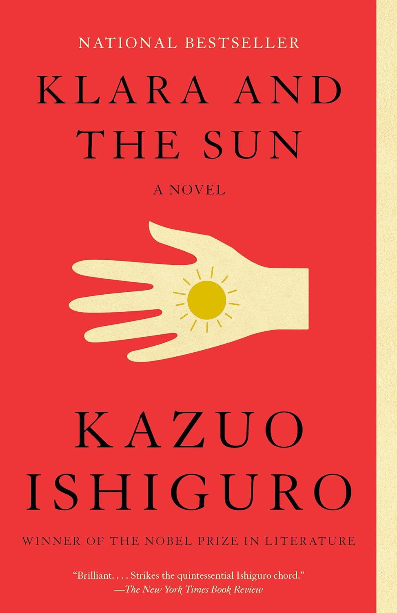
Klara and the Sun
Ishiguro's 2021 novel follows Klara, an solar-powered Artificial Friend who observes the world from a store window before being purchased as a companion for a chronically ill teenager—a deceptively simple premise that becomes a meditation on consciousness, sacrifice, and what we owe to those we create. Taika Waititi directing Ishiguro is a genuinely strange pairing: the former's whimsical irreverence seems fundamentally at odds with the latter's restrained melancholy, though Sony and 3000 Pictures are clearly betting that Waititi's *Jojo Rabbit* proves he can handle tonal complexity. Jenna Ortega as Klara and Amy Adams as the calculating mother suggest they're taking the material seriously, but Ishiguro's prose works through accumulation and implication—qualities that rarely survive the transition to screen. Read the book first; Klara's narration is the entire point, and if Waititi's vision doesn't land, you'll want to know what was lost.
Date Not Yet Confirmed
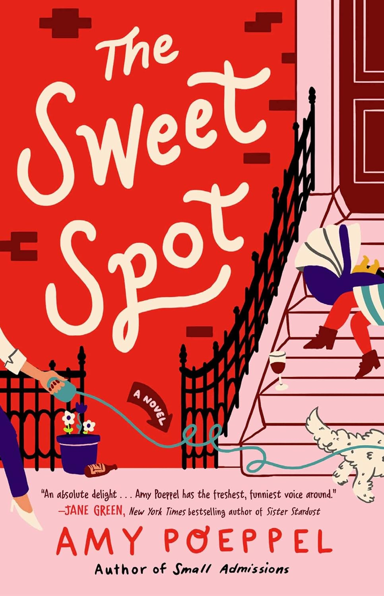
The Sweet Spot
Amy Poeppel's 'The Sweet Spot' follows three women whose lives collide around an unexpected baby and a scheme for payback—think ensemble rom-com with sharper edges than the premise suggests. Universal Pictures picked it up, likely betting on the same audience that made 'Book Club' profitable, though without a director or cast attached, this feels more like a hedge than a priority. The novel works because Poeppel gives each woman a distinct voice and lets their friendship develop through actual conflict, not just wine-fueled montages. Read the book first: it's a breezy weekend read, and film adaptations of ensemble comedies almost always flatten the characters into types, losing exactly the kind of specificity that makes Poeppel's writing worth your time.
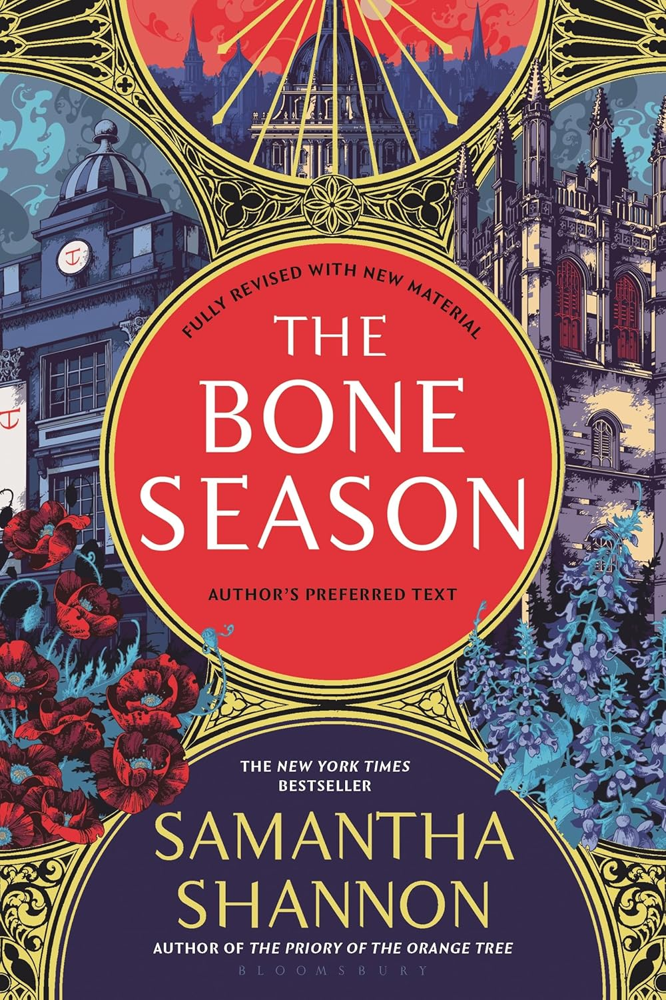
The Bone Season
Samantha Shannon's debut novel follows Paige Mahoney, a clairvoyant "dreamwalker" who works in London's criminal underworld in 2059, only to be captured and sent to a secret penal colony run by a mysterious humanoid race called the Rephaim. The book is dense urban fantasy with an elaborate magic system—think *His Dark Materials* meets *The Handmaid's Tale*—and it's the first in a planned seven-book series that Shannon has been steadily releasing since 2013. Apple TV+ picked up the rights years ago, but the project has languished in development hell with no cast, no showrunner announcement, and no production start date, which suggests either budget concerns or creative disagreements behind the scenes. Read the book first: Shannon's world-building is so layered that any adaptation will have to simplify heavily, and you'll want the full mythology in your head before watching Apple inevitably streamline it.
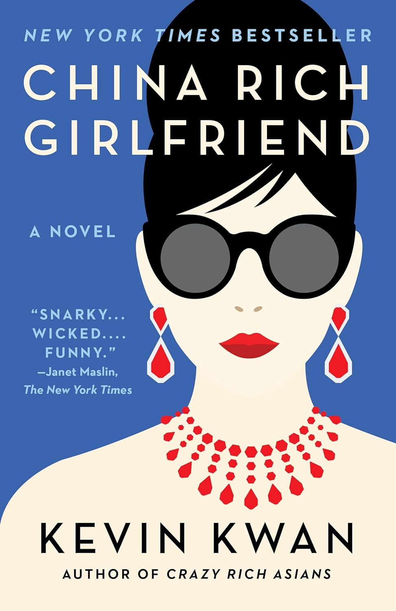
Crazy Rich Asians: China Rich Girlfriend
Kevin Kwan's second novel follows Rachel Chu to mainland China, where she discovers her birth father is a real estate tycoon—cue family intrigue, new money versus old money clashes, and Kwan's signature footnotes explaining dim sum etiquette and Hong Kong social hierarchies. Jon M. Chu returns to direct, with Constance Wu and Henry Golding reprising their roles, though Warner Bros. has yet to lock a release date after production stalled in recent years. The 2018 original became a cultural milestone and a box office success, making this sequel one of the few major studio franchises centered on Asian characters and stories. Read the book first: Kwan's satirical voice and encyclopedic detail about Asia's ultra-wealthy are half the pleasure, and the film will inevitably streamline his sprawling cast of cousins, mistresses, and scheming in-laws.
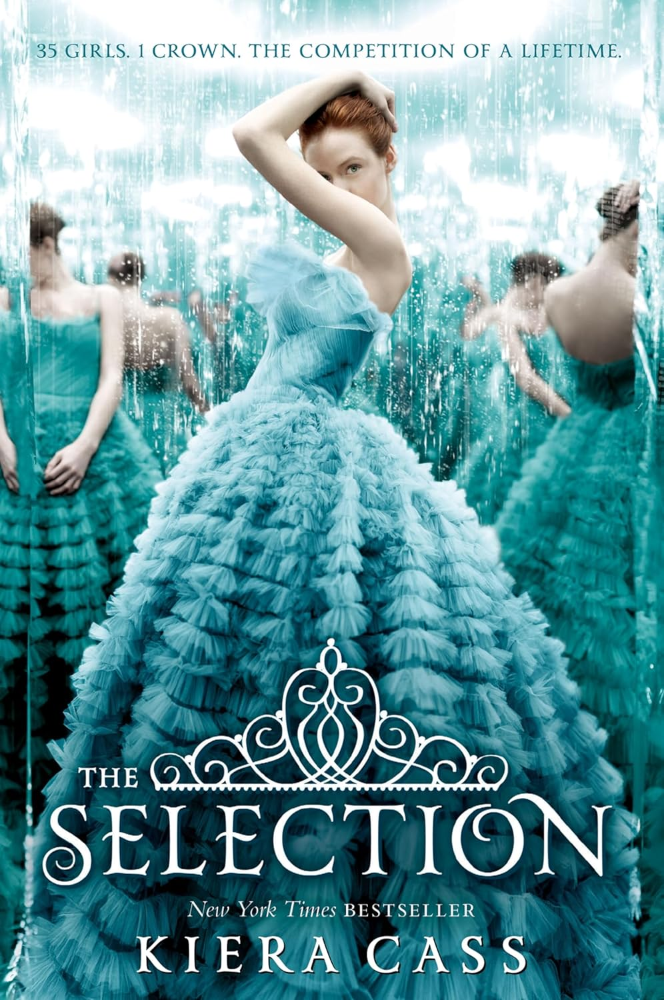
The Selection
Kiera Cass's *The Selection* is *The Bachelor* meets *The Hunger Games*—thirty-five girls compete for Prince Maxon's hand in a televised contest while a caste-based dystopia crumbles around them. It's cotton-candy YA with surprising emotional weight, best for readers who want romance with a side of rebellion. Netflix's series adaptation, helmed by Saudi director Haifaa al-Mansour (*Wadjda*), has been in development limbo since at least 2020, outlasting multiple failed film attempts at Warner Bros. The streaming format should give the five-book series room to breathe, though without cast or release dates, this remains more promise than reality. Read the book first—Cass's world-building and the slow-burn romance between America Singer and Maxon deserve your full attention before Netflix inevitably compresses them into bingeable episodes.
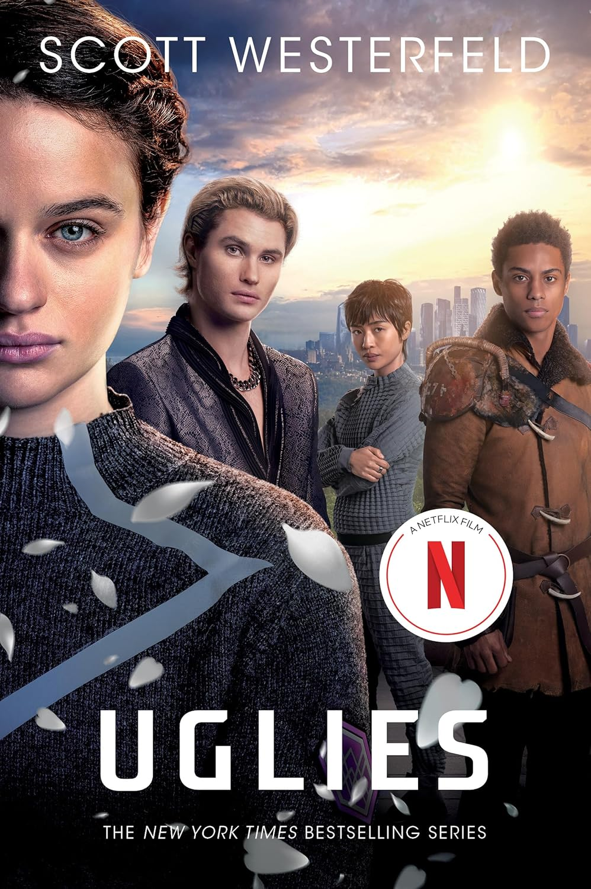
Uglies
Scott Westerfeld's 2005 novel follows Tally Youngblood in a world where mandatory plastic surgery at sixteen divides society into 'Uglies' and 'Pretties'—a premise that reads as both prescient about Instagram culture and dated in its early-2000s conception of beauty standards. Netflix is developing this as a series after years of false starts, though with no cast, showrunner, or timeline attached, it remains pure speculation whether they'll update the book's clunky tech (hoverboards, interface rings) or lean into period-piece futurism. The source material works best for readers aged 12-15 encountering dystopian fiction for the first time; adults will find Westerfeld's prose serviceable but his world-building thin compared to later YA like 'The Hunger Games.' Given Netflix's track record with YA adaptations and the complete absence of creative team details, read the book only if you're genuinely curious about mid-2000s YA—otherwise, wait to see if this actually materializes with talent attached.
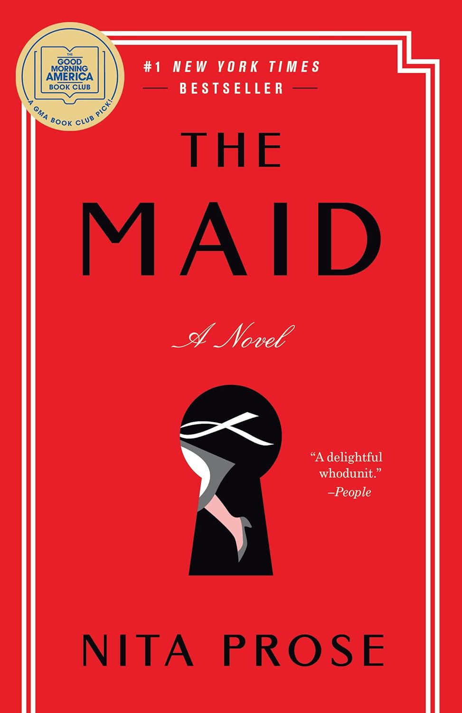
The Maid
Nita Prose's debut mystery follows Molly the maid, a neurodivergent hotel cleaner whose obsessive routines and literal interpretations of social cues make her both endearing and unreliable when she discovers a wealthy guest dead in his suite. Universal Pictures secured the rights with Florence Pugh attached to star, a casting choice that promises the emotional precision Molly's character demands—Pugh excels at playing women whose interior lives don't match their surfaces. The project has been in development since 2022 with no director announced, which suggests either careful deliberation or studio uncertainty about how to balance the book's cozy charm with genuine thriller stakes. Read the book first: Prose's first-person narration is what makes Molly work, and without access to her earnest, pattern-seeking mind, the story risks becoming just another quirky-woman-solves-crime vehicle that flattens what makes the character compelling.

Where the Crawdads Sing Sequel
Delia Owens' sequel picks up Kya's story where the 2018 phenomenon left off, continuing the marsh-set saga that blended murder mystery with naturalist coming-of-age drama and sold over 18 million copies. Sony is banking on lightning striking twice after the 2022 film grossed $144 million worldwide, with Daisy Edgar-Jones likely returning and Olivia Newman potentially back to direct, though the project remains in early development with no confirmed release window. The first adaptation succeeded by leaning into the book's lush North Carolina setting and courtroom tension, but also flattened some of Owens' more complex ecological writing into straightforward romance. Given that the sequel will be working from a book written explicitly to continue a story many felt was complete, this feels like a commercial play rather than an artistic necessity. Read the first book if you haven't—it earned its success—but wait to see if this sequel justifies its existence before committing to either version.
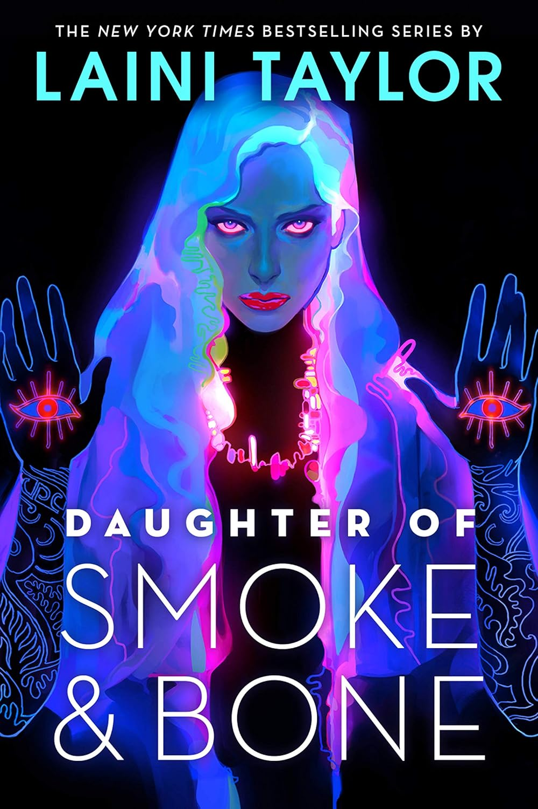
Daughter of Smoke & Bone
Laini Taylor's 2011 novel follows Karou, a blue-haired art student in Prague who runs errands for a chimera dealer in teeth while sketching monsters in her sketchbook—until she discovers her connection to an ancient war between angels and chimera. Universal optioned the rights over a decade ago, but the project has languished in development hell with no director, cast, or meaningful updates since the initial announcement. The book's appeal lies in Taylor's baroque prose and the slow-burn romance between Karou and the angel Akiva, elements that require a director with a strong visual sense and patience for world-building rather than franchise-building instincts. Given Universal's silence and the crowded fantasy slate, this feels like a rights hold rather than an active production. Read the book—it's a complete story with two sequels, and if the film ever materializes, you'll have spent your time better than waiting for updates that may never come.
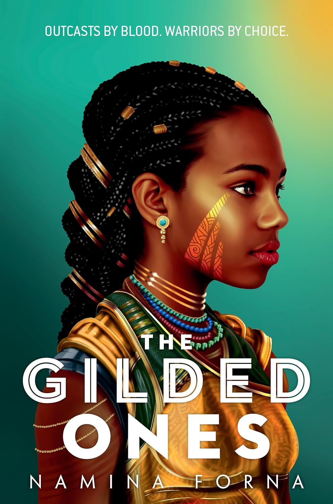
The Gilded Ones
Namina Forna's debut follows Deka, a sixteen-year-old girl in the West African-inspired empire of Otera who discovers she's an alaki—an immortal, gold-blooded warrior—after failing a brutal purity ritual. The novel blends feminist rage with mythology, exploring bodily autonomy and systemic oppression through visceral action sequences and a magic system rooted in blood and transformation. Paramount optioned the rights in 2020, banking on the YA fantasy boom, but the project has languished in development hell with no director, cast, or meaningful updates in six years. Given Hollywood's track record with culturally specific fantasy—and the likelihood this gets watered down or shelved entirely—read the book now. Forna's prose carries a specificity about ritual scarification, found family, and righteous anger that won't survive a studio notes process, and waiting for this film is a gamble not worth taking.
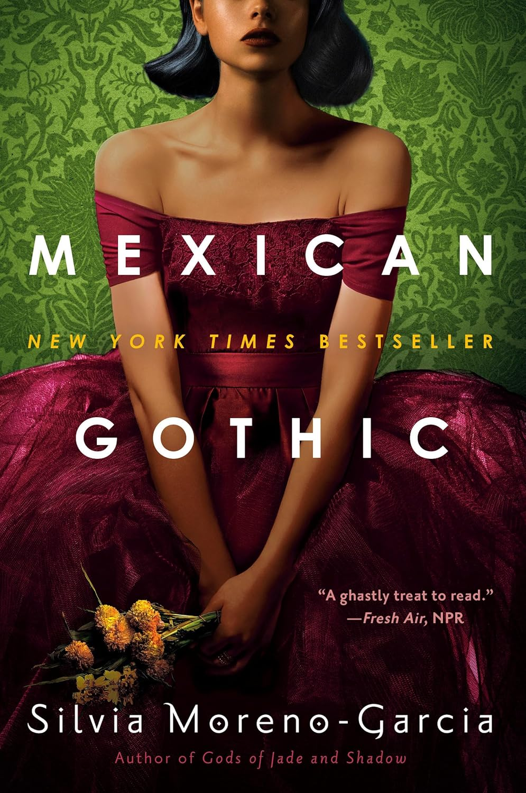
Mexican Gothic
Silvia Moreno-Garcia's 2020 breakout is a gothic horror novel that sends a glamorous Mexico City socialite to a crumbling mansion in the countryside, where she discovers her cousin isn't just sick—she's trapped in something far older and stranger than tuberculosis. The book works because Moreno-Garcia takes the trappings of classic English gothic (think Rebecca meets Crimson Peak) and filters them through Mexican history, eugenics, and colonialism, creating something that feels both familiar and genuinely unsettling. Hulu picked up the rights in 2021, likely betting that the novel's blend of prestige horror and cultural specificity could be their answer to HBO's Lovecraft Country, though the project has been stuck in development limbo with no director, cast, or production timeline announced. Read the book first—Moreno-Garcia's prose is what makes the slow-burn dread work, and there's a real risk the adaptation will sand down the novel's thornier ideas about race and class to chase scares.

The Song of Achilles
Madeline Miller's Orange Prize-winning novel retells the Iliad as an intimate love story between Achilles and his companion Patroclus, narrated by Patroclus himself as he watches the hero's destiny unfold. It's historical fiction for readers who want Homer with emotional interiority—less battlefield catalog, more aching character study of what it means to love someone fated for glory and early death. HBO has the project in development with no attached showrunner or cast yet, which means it's years away and could still fall apart, though the network's track record with literary adaptations (His Dark Materials, The Time Traveler's Wife) suggests they understand prestige source material even if execution varies. Miller's prose is the entire point here—the way she makes ancient Greek myth feel immediate and devastating through Patroclus's voice—and that's nearly impossible to translate to screen without it becoming just another sword-and-sandals romance. Read the book first, because if this adaptation ever actually happens, you'll want to have experienced Miller's language on the page.
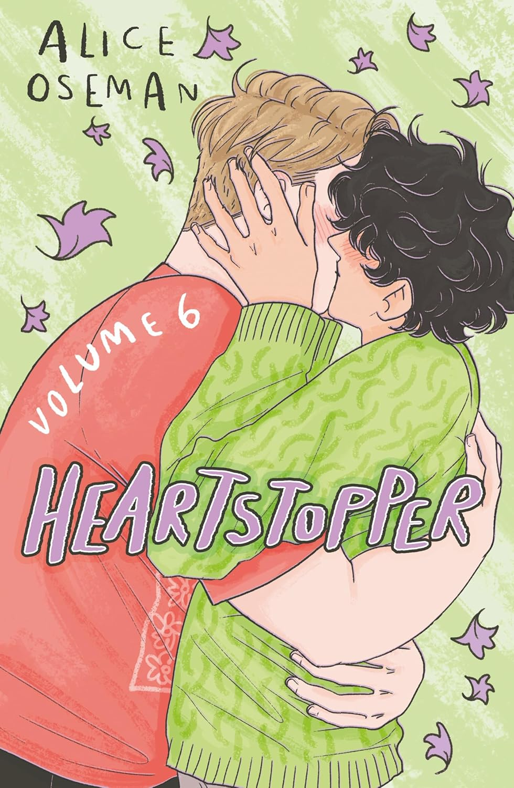
Heartstopper Volume 6
Alice Oseman's graphic novel series follows Nick and Charlie through the complications of young queer love — not just the coming-out drama, but the quieter anxieties about mental health, intimacy, and what happens after the happy beginning. Netflix's adaptation has been a genuine phenomenon, with Joe Locke and Kit Connor turning what could have been saccharine into something emotionally precise, and Oseman herself writing and producing to keep the show from Hollywood's usual sanitizing instincts. Volume 6 will presumably arrive as part of a future season, though Netflix hasn't committed to a timeline, which is typical for a series that films in the UK with young actors juggling school schedules. Read the book first — Oseman's panel layouts and hand-lettering do emotional work that live-action can't replicate, and the graphic novel gives you the internal monologue that even great actors can only approximate.
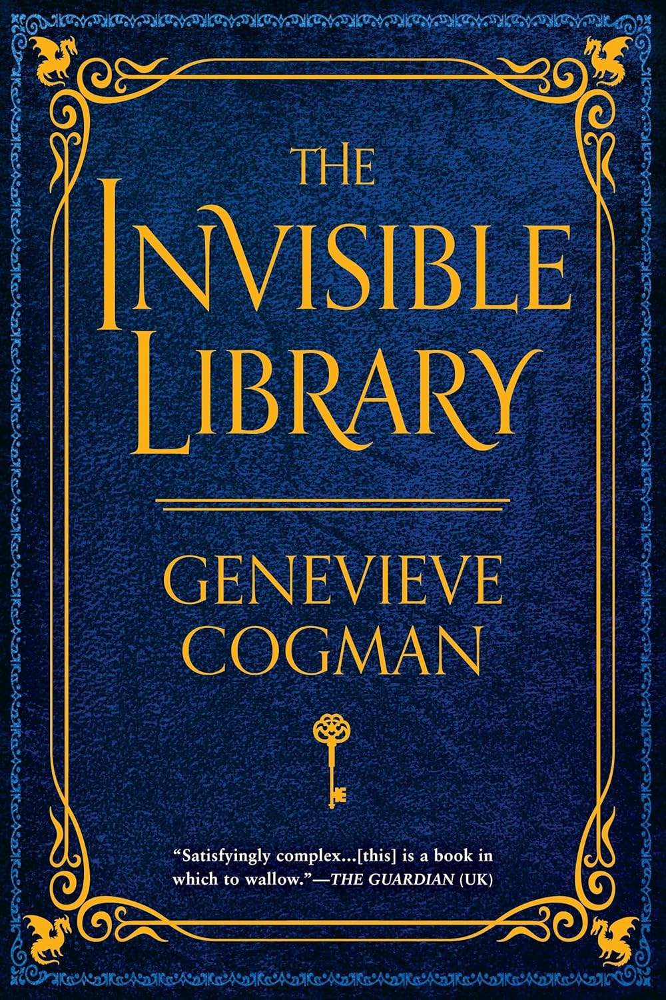
The Invisible Library
Genevieve Cogman's series follows Irene, a spy for a secret interdimensional library that steals rare books from alternate realities—think James Bond meets Doctor Who, with a Victorian London setting that shifts between steampunk and high fantasy depending on which world she's infiltrating. Peacock picked up the rights in what feels like a gamble on quirky genre fare, though the complete absence of casting or creative team news suggests this one's stuck in development limbo. The books work because Cogman commits fully to the absurd premise: Irene literally uses the power of language to manipulate reality, and the mythology gets genuinely weird across eight novels. Read the book first—not because the show will butcher it, but because there's no guarantee this adaptation will ever materialize, and Cogman's voice is too specific to wait on a streaming service that might shelve the project tomorrow.
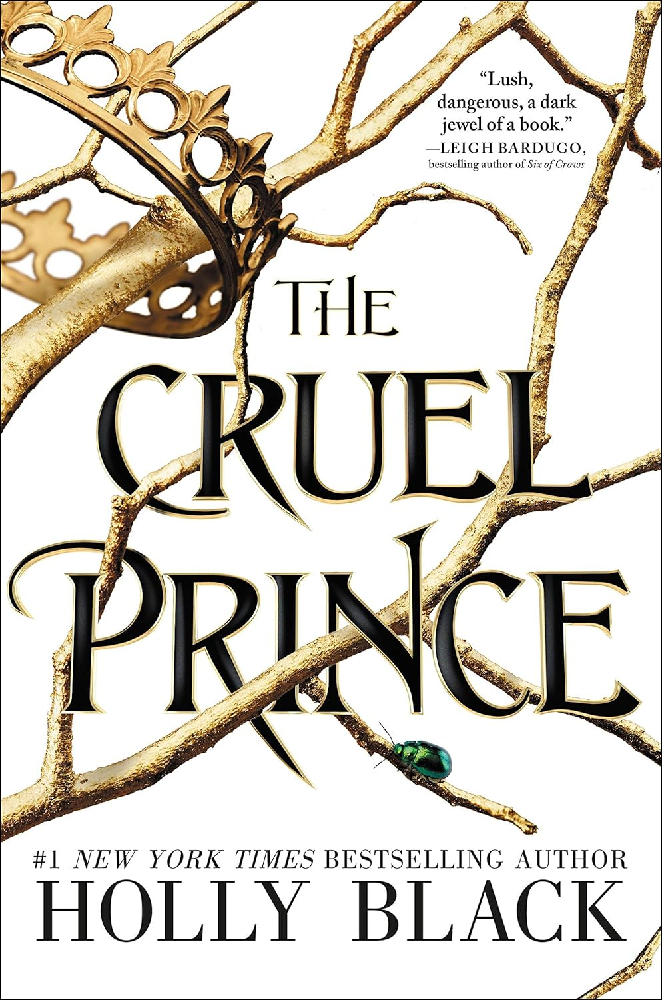
The Cruel Prince
Holly Black's The Cruel Prince follows Jude Duarte, a mortal girl raised among the fae after her parents' murder, who refuses to accept her inferior status in the High Court of Elfhame—leading her into a vicious game of political maneuvering, betrayal, and an enemies-to-lovers entanglement with the cruel Prince Cardan. Disney+ is developing a series adaptation, which raises immediate questions about whether the Mouse House can preserve the book's genuinely nasty court politics, graphic violence, and sexual tension, or if we'll get a sanitized version that defeats the entire point. The project remains in early development with no director, cast, or timeline attached, though Disney's recent fantasy investments (Percy Jackson, The Spiderwick Chronicles) suggest they're at least trying to court older YA audiences. Read the book first—Black's trilogy thrives on moral ambiguity and a protagonist willing to lie, manipulate, and murder her way to power, and there's a real risk the adaptation will sand down those edges into something toothless.
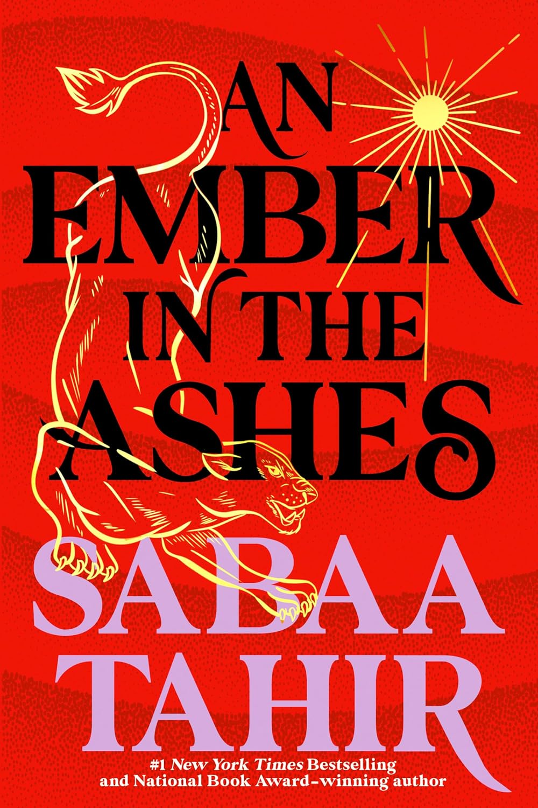
An Ember in the Ashes
Sabaa Tahir's debut follows Laia, a scholar living under the boot of the Martial Empire (think Rome if it had never fallen and ran on systematic brutality), and Elias, a reluctant soldier trained at the empire's elite military academy. Their collision drives a story about resistance, loyalty, and the cost of survival in a world where magic is rare and violence is currency—this is YA that doesn't pull punches. Paramount+ announced the adaptation in 2022, but four years later there's no director, no cast, and no meaningful production updates, which suggests the project is either stalled or being quietly redeveloped. The streamer's track record with fantasy has been uneven at best, and without a creative team attached, it's impossible to gauge whether they'll honor Tahir's intricate worldbuilding or sand it down into generic dystopia. Read the book first—not because the show will inevitably disappoint, but because there's no guarantee it will ever exist, and the novel delivers a complete, visceral experience on its own terms.
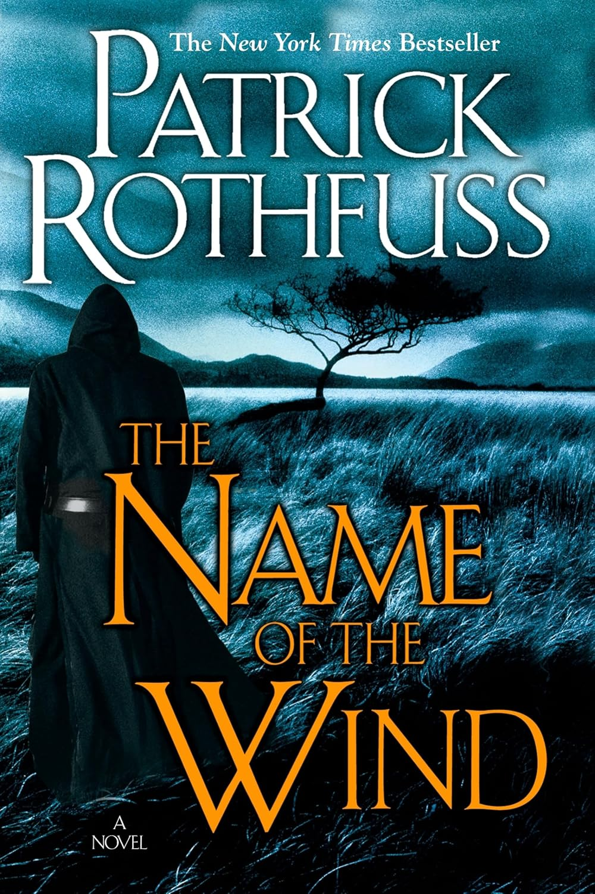
The Name of the Wind
Patrick Rothfuss's debut follows Kvothe, a legendary wizard recounting his rise from orphaned street urchin to arcane university prodigy—told in a nested frame narrative that treats storytelling itself as a kind of magic. Showtime has been developing this adaptation since 2017 with Lin-Manuel Miranda producing, but after nearly a decade of silence, casting announcements, and zero footage, the project feels more like vaporware than prestige television. The source material's appeal lies in Rothfuss's obsessive attention to systems—sympathy magic works through thermodynamic principles, music theory dictates supernatural power—which doesn't translate easily to screen and will likely get flattened into generic wizard school drama. Read the book first, if only because waiting for this show to actually materialize will take longer than waiting for Rothfuss to finish the trilogy.
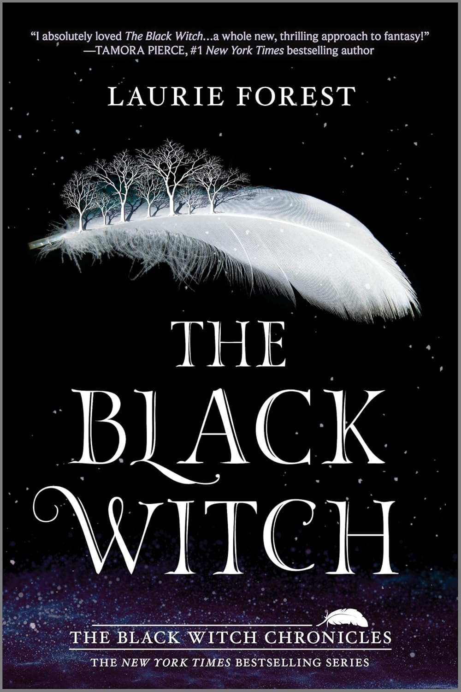
The Black Witch
Laurie Forest's The Black Witch follows Elloren Gardner, a sheltered young woman who arrives at a magical university believing her people's supremacist propaganda, only to have her worldview systematically dismantled—it's essentially a fantasy about unlearning racism, which made it one of the most divisive YA debuts of the 2010s. Amazon Prime Video is developing a series adaptation, which makes sense given the book's episodic structure and the streamer's appetite for sprawling fantasy properties, though no director, showrunner, or cast has been announced. The project remains in early development with no meaningful updates since its initial announcement, suggesting Amazon may be cautious about how to handle material that sparked intense debate about whether depicting prejudice this explicitly serves the story or simply replicates harm. Read the book first—Forest's 900-page commitment to showing her protagonist's slow, painful education only works if you're willing to sit with serious discomfort, and any adaptation will almost certainly soften or accelerate that arc for a general audience.

Sense and Sensibility
Austen's 1811 novel contrasts two sisters navigating inheritance law and courtship in Regency England—Elinor, who suppresses her feelings, and Marianne, who indulges them recklessly—to dissect how women survive in a society that punishes both restraint and passion. Director Georgia Oakley (Blue Jean) brings a queer filmmaker's eye to material that has always been about economic vulnerability dressed as romance, with Daisy Edgar-Jones (Where the Crawdads Sing, Normal People) attached in an undisclosed role. The 1995 Emma Thompson screenplay remains the definitive screen version, which means this project needs to justify its existence beyond casting appeal. Read the book first—Austen's irony operates at the sentence level, and no adaptation has ever captured the acid precision of her narrator's voice.
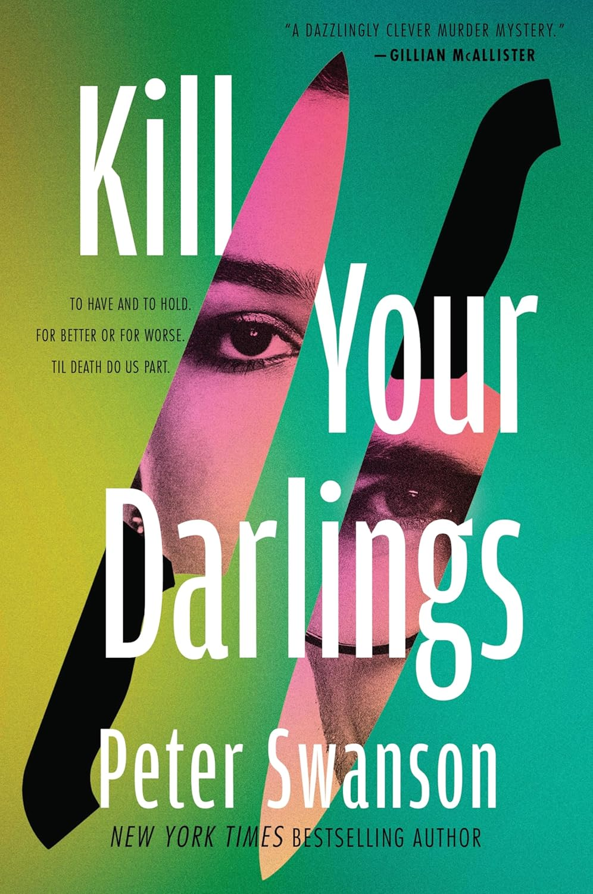
Kill Your Darlings
Swanson's 2025 psychological thriller dissects a marriage in reverse chronology, peeling back from its violent end to the seemingly innocent beginning, exposing the precise moments trust corroded into something lethal. Julia Roberts anchors the adaptation under James Gray, whose patient, character-driven work on *The Yards* and *Two Lovers* suggests he'll honor the novel's methodical unraveling rather than rush toward genre beats. The backwards structure isn't a gimmick—it's the entire architecture of suspense, each chapter recontextualizing what you thought you understood about who these people are and what they're capable of. Read the book first: the film will inevitably compress Swanson's carefully calibrated reveals, and this is one where knowing *how* the story moves backward matters as much as the destination.
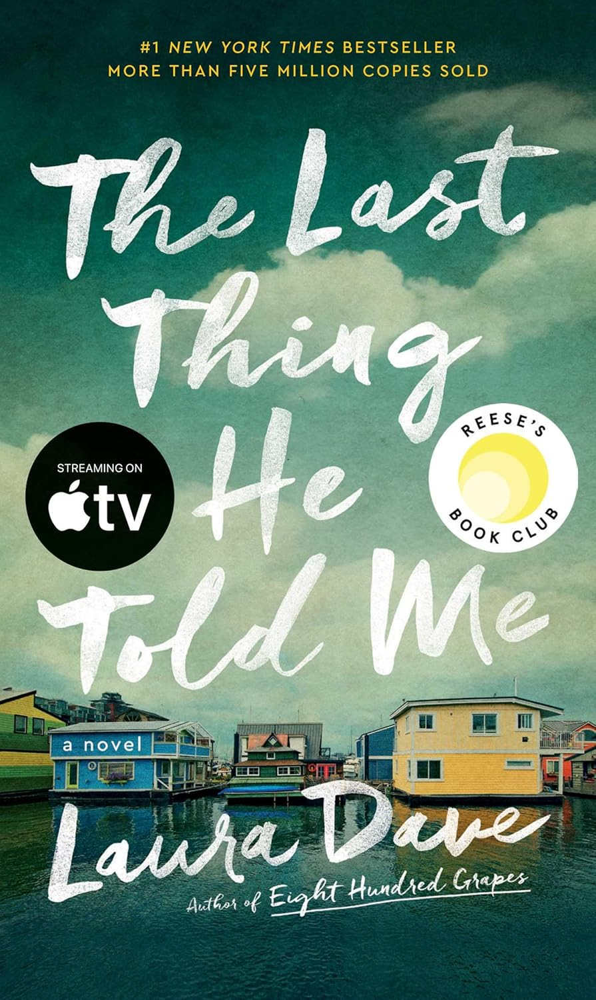
The Last Thing He Told Me (Season 2)
Laura Dave's domestic thriller follows Hannah Hall, a woman whose husband vanishes, leaving behind only a cryptic note and a teenage stepdaughter she barely knows. It's a taut mystery about trust and reinvention that became a Reese's Book Club pick before Apple TV+ adapted it with Jennifer Garner in the lead. The first season proved successful enough that Apple greenlit a second season based on Dave's forthcoming sequel novel—a rare case where the author is writing the next book in tandem with the show's development, with Nikolaj Coster-Waldau and Angourie Rice returning alongside Garner. If you're curious about the setup, read the first book now; it's a quick, propulsive read that will make Season 1 more rewarding, and you'll be ahead of the curve when the sequel drops.
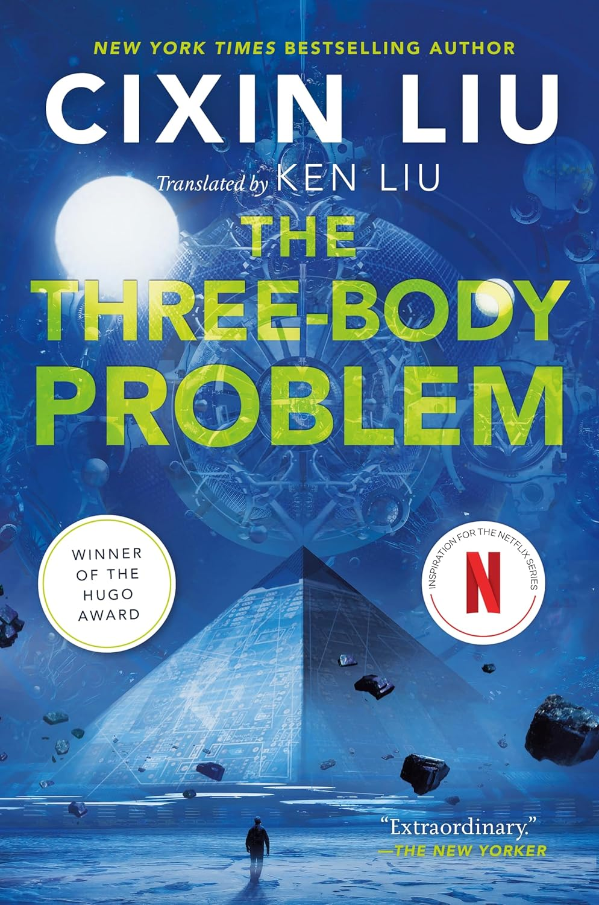
The Three-Body Problem (Season 2)
Cixin Liu's Remembrance of Earth's Past trilogy is hard science fiction at its most uncompromising—alien contact through quantum mechanics, game theory applied to interstellar war, and cosmological concepts that make your brain hurt in the best way. Netflix's continuation will adapt The Dark Forest and Death's End, the second and third books, which escalate from first contact into centuries-spanning cosmic chess and reality-bending physics. Showrunners David Benioff and D.B. Weiss (Game of Thrones) return with Alexander Woo, and the first season proved they can translate Liu's dense ideas into compelling television without dumbing them down. The Dark Forest in particular is where the series becomes genuinely visionary—its central theory about why the universe stays silent is one of the most chilling ideas in modern SF. Read the books first: Liu's prose is workmanlike but his concepts demand the kind of attention only reading provides, and you'll want the full philosophical framework before Netflix inevitably compresses timelines and simplifies the math.
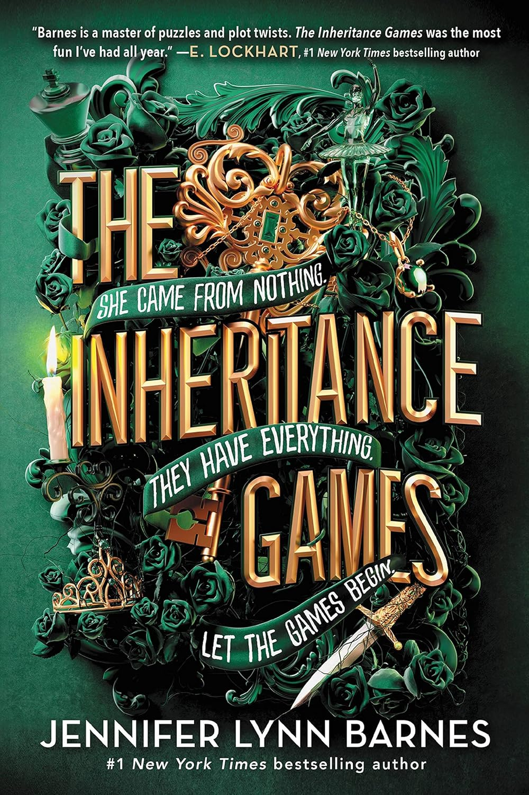
The Inheritance Games
Jennifer Lynn Barnes's YA thriller follows Avery Grambs, a nobody high school student who suddenly inherits the entire fortune of Texas billionaire Tobias Hawthorne—a man she's never met. The twist: she must live in his mansion alongside his four resentful, riddle-obsessed grandsons while solving the mystery of why she was chosen. Amazon rescued the project from film development hell, wisely opting for a series format that can accommodate the book's labyrinthine puzzles and two sequels. The show is still in early scripting stages with no cast attached. Barnes writes propulsive puzzle-box plotting with genuine romantic chemistry, and the book's clues and red herrings will reward close readers before the adaptation arrives—read it first.
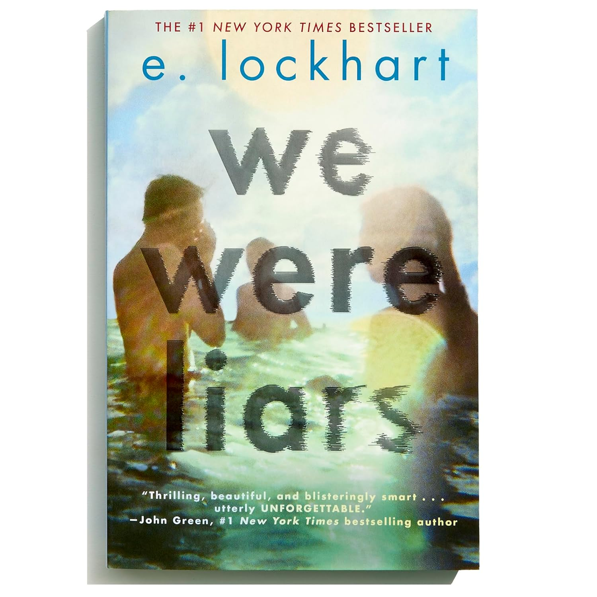
We Were Liars
E. Lockhart's 2014 YA thriller follows Cadence Sinclair, a teenage girl piecing together the truth about a mysterious accident that wiped her memory during a summer on her family's private Massachusetts island. The book became a BookTok sensation for its unreliable narration and genuinely shocking final twist—one that works precisely because Lockhart controls every word on the page. Amazon has tapped Julie Plec (The Vampire Diaries) and Carina Adly MacKenzie (Roswell, New Mexico) to develop the series, though it remains in early scripting stages with no cast or timeline. The problem: this is a story engineered around a single reveal that loses all power once you know it's coming, and adaptations telegraph twists that prose can hide. Read the book first—it's a quick 200 pages, and watching the series without experiencing Lockhart's sleight-of-hand yourself would be like having someone explain a magic trick before you see it performed.
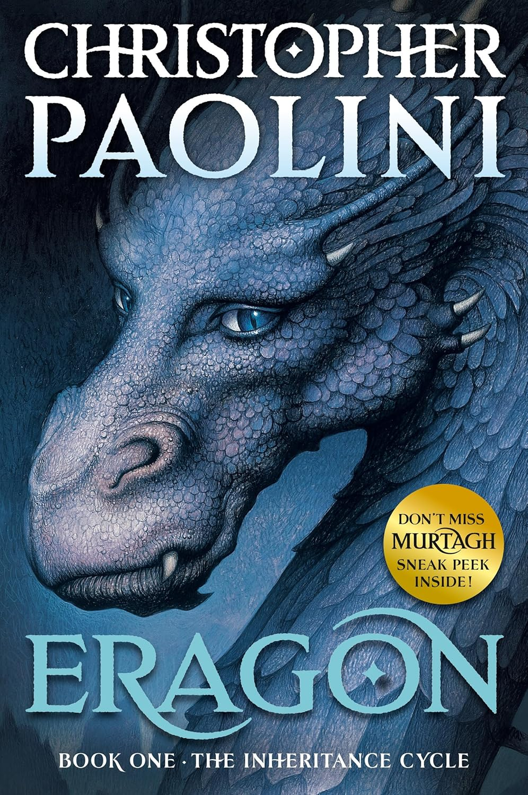
Eragon
Paolini's debut novel—written when he was fifteen—follows Eragon, a farm boy who finds a dragon egg and gets swept into a rebellion against the Empire's dark king Galbatorix. It's derivative Tolkien-meets-Star Wars wish fulfillment, but the dragon-rider bond and magic system have enough charm to explain why it launched a four-book series. Disney+ is taking another swing after the disastrous 2006 film (Jeremy Irons couldn't save it), with Paolini himself co-writing and executive producing this time. The project has been in development since 2022 with no casting announced yet, suggesting they're being cautious about getting it right. If you have any nostalgia for early 2000s YA fantasy or want to see what a teenage author built into a phenomenon, read it first—the show's faithfulness will depend entirely on whether Paolini can translate his own earnest prose to screen without the clunk.
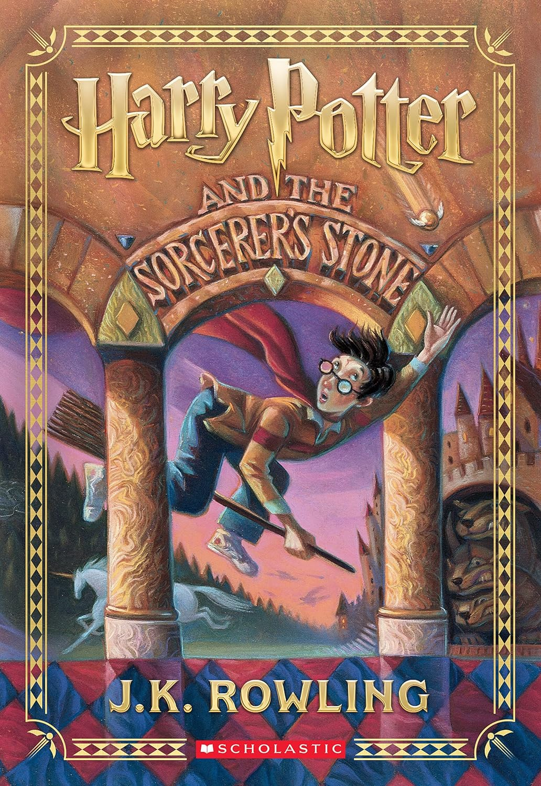
Harry Potter
Rowling's seven-book saga follows an orphaned boy who discovers he's a wizard and spends seven years at Hogwarts School of Witchcraft and Wizardry, battling prejudice, adolescence, and an immortal dark lord. Max is betting big on a decade-long series with one season per book, promising the sprawling subplots and character arcs the Warner Bros. films compressed or abandoned entirely—think S.P.E.W., Peeves, and a properly developed Ginny Weasley. Rowling's involvement as executive producer has drawn both enthusiasm for canonical accuracy and public backlash over her gender politics, making this the rare reboot shadowed by cultural controversy before a single frame is shot. If you've only seen the movies, read the books first: the films are competent blockbusters, but the novels have a wit, interiority, and thematic richness that David Yates never captured.
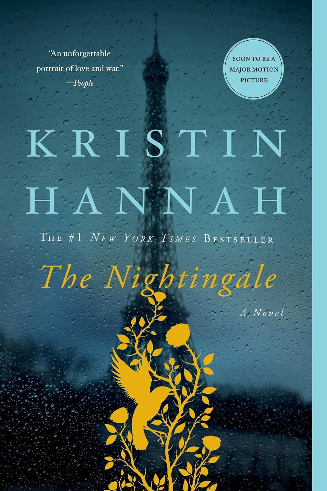
The Nightingale
Kristin Hannah's *The Nightingale* follows two French sisters—one who joins the Resistance, one who endures occupation at home—through the moral crucibles of World War II, and it became a phenomenon among historical fiction readers for its unflinching portrayal of women's courage under Nazi rule. The adaptation pairs real-life sisters Dakota and Elle Fanning as on-screen siblings for the first time, directed by French actress-turned-filmmaker Mélanie Laurent (*Galveston*), with TriStar betting on prestige drama appeal. The project has languished in post-production since 2022, repeatedly pulled from the schedule with no current release date, suggesting either studio cold feet or significant creative retooling. Read the book first—Hannah's prose carries an emotional weight that a troubled production may struggle to match, and the novel's dual-timeline structure works better on the page than it likely will in a two-hour cut.
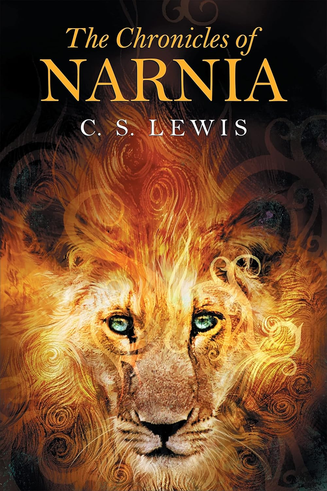
The Chronicles of Narnia
C.S. Lewis's seven-book fantasy series follows British children who stumble into Narnia, a magical world of talking animals, mythical creatures, and thinly veiled Christian allegory—essential reading for anyone who grew up on fantasy but hasn't revisited it as an adult. Netflix hired Greta Gerwig to write and direct at least two films after her Barbie success, a baffling choice that has everyone wondering how her ironic, meta sensibility will handle Lewis's earnest moral fables. The project remains in early development with no cast, no release date, and no clarity on which books she'll tackle first or whether she'll follow publication order (The Lion, the Witch and the Wardrobe) or chronological order (The Magician's Nephew). The books are short and move quickly—read The Lion, the Witch and the Wardrobe at minimum, if only to appreciate how radically Gerwig might reinvent material that has defeated every previous filmmaker who touched it.
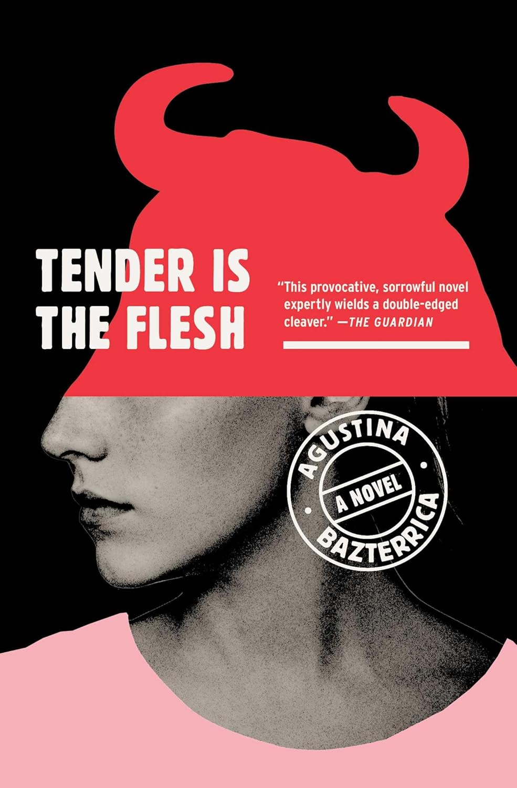
Tender is the Flesh
Bazterrica's 2017 dystopian nightmare imagines a near-future where a virus renders animal flesh toxic, forcing governments to legalize human meat production—complete with factory farms, processing plants, and clinical euphemisms like "special meat." The protagonist, Marcos, works at a slaughterhouse where people are bred and butchered like livestock, and Bazterrica spares no detail in depicting the industrial machinery of cannibalism as a stand-in for every atrocity we've already normalized. Searchlight Pictures is developing the adaptation with Argentine director Agustín Toscano attached, though the project remains in early scripting with no cast or timeline announced. The novel is short, relentless, and genuinely difficult to stomach—but its allegorical force depends on Bazterrica's cold, procedural prose, which a film will struggle to replicate without tipping into exploitation. Read the book first: it's the only way to experience the full weight of its metaphor before Hollywood decides how much horror audiences can handle.
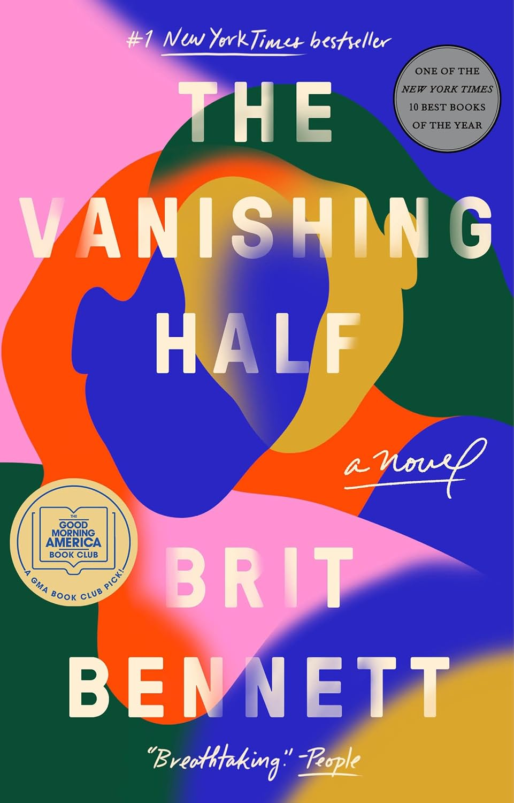
The Vanishing Half
Brit Bennett's 2020 novel tracks the Vignes twins from their Louisiana hometown through decades of divergent choices — one sister passes as white in California, the other raises a dark-skinned daughter in the South. It's a patient, character-driven exploration of colorism, family inheritance, and the costs of reinvention that works because Bennett never simplifies her characters' motivations. HBO's adaptation has Issa Rae producing through Hoorae Media, with playwrights Aziza Barnes and Jeremy O. Harris co-writing, which suggests they understand the novel's theatrical structure and moral complexity. The book's deliberate pacing and internal focus make it essential reading first — Bennett's prose does work that even prestige TV will struggle to replicate, and you'll want her version of these women in your head before HBO gives you theirs.
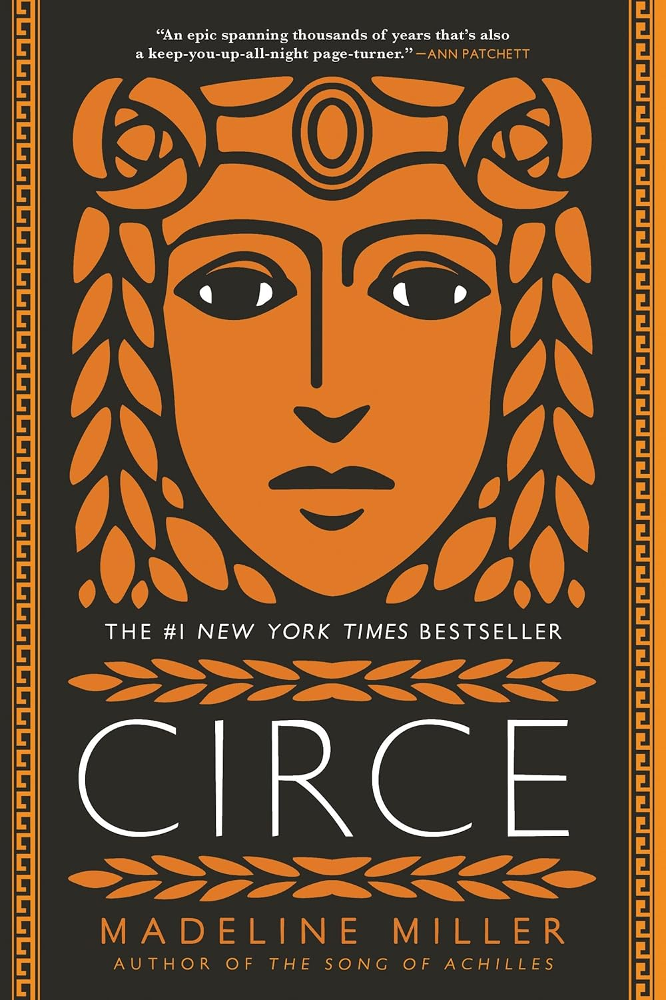
Circe
Madeline Miller's *Circe* takes a footnote from *The Odyssey* — the witch who turns men into pigs — and builds an entire life around her: exile among petty Olympian gods, centuries alone perfecting her craft, brief encounters with Daedalus and the Minotaur, and finally a reckoning with Odysseus himself. HBO announced the adaptation years ago with *Planet of the Apes* screenwriters Rick Jaffa and Amanda Silver attached, but the project has gone quiet, likely stuck in development hell. Miller's prose is patient and interior, more psychological novel than action-driven myth, which makes it a tricky fit for prestige TV's need for forward momentum. Read the book first — it's a complete, self-contained experience, and if the show ever materializes, you'll know exactly what got lost in translation.
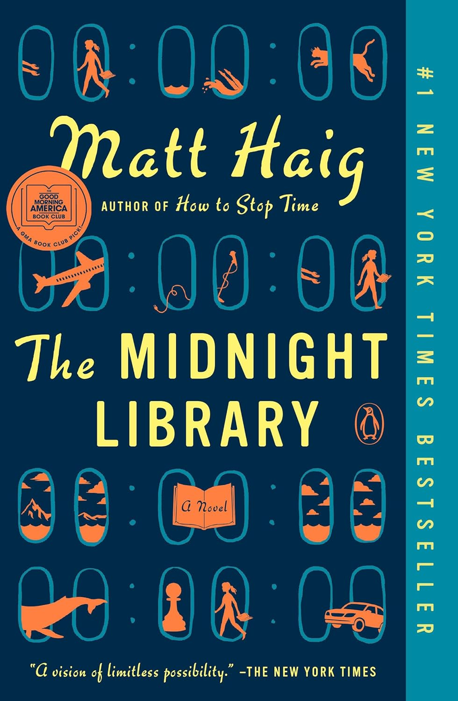
The Midnight Library
Matt Haig's 2020 novel follows Nora Seed, a depressed woman who lands in a metaphysical library where each book lets her sample an alternate version of her life—Olympic swimmer, glaciologist, rock star, devoted wife. It's high-concept self-help fiction dressed as speculative philosophy, earnest and readable if occasionally saccharine, aimed squarely at readers who loved *The Alchemist*. StudioCanal tapped Gil Kenan (*Poltergeist* remake, *Monster House*) to write and direct, a curious choice given his horror pedigree, though *A Boy Called Christmas* showed he can handle whimsy. The book's structure—essentially a series of vignettes as Nora tries on lives—could work as a film or collapse into repetitive montage depending on execution. Read it if you want the full emotional arc and Haig's particular brand of therapeutic optimism, but the core premise is simple enough that you can walk in cold without missing much.
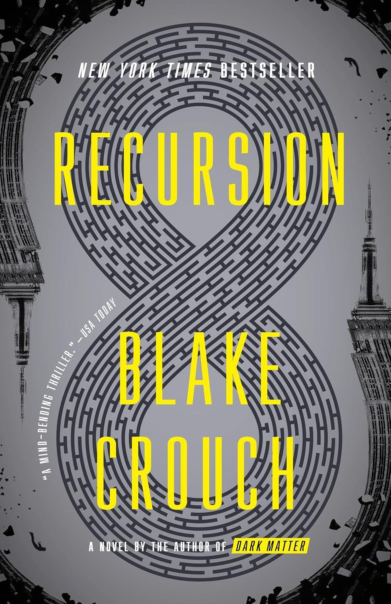
Recursion
Blake Crouch's 2019 thriller follows a neuroscientist and a NYC cop investigating False Memory Syndrome, a condition where people suddenly remember entire alternate lives they never lived—marriages, children, careers—before the cognitive dissonance drives them to suicide. Crouch, who wrote the Wayward Pines trilogy, builds a propulsive mystery that pivots into reality-warping sci-fi as the protagonists discover someone is weaponizing memory-altering technology to rewrite history itself. Netflix secured the rights through a three-way deal involving Shondaland and Matt Reeves's 6th & Idaho, though the project remains in script development with no director or cast attached. Read the book first: Crouch's nested timelines and recursive plot structure require active engagement that a two-hour film will inevitably compress into something more linear and less satisfying.

Twilight
Stephenie Meyer's 2005 YA phenomenon about a clumsy high schooler who falls for a century-old vampire remains divisive—purple prose and all—but it defined a generation's romantic fantasies and sparked the paranormal romance boom. Lionsgate Television is developing a new series interpretation of Bella and Edward's story, with Meyer attached as a producer, though no showrunner, cast, or even format (live-action versus animated) has been announced. The original film franchise grossed $3.3 billion worldwide, so expectations will be high for any reboot to justify its existence beyond nostalgia. If you never read it the first time around, the book is worth experiencing for its cultural impact alone, but if you're a lapsed fan, wait to see if this adaptation earns your time.
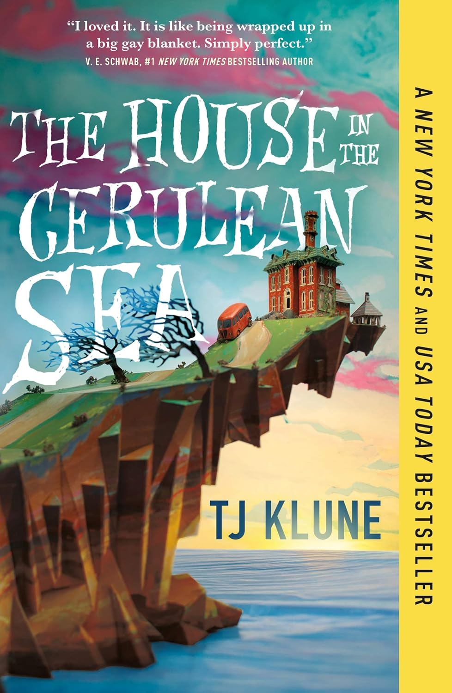
The House in the Cerulean Sea
T.J. Klune's cozy fantasy follows Linus Baker, a by-the-book caseworker for magical youth, who's sent to evaluate an orphanage on a remote island housing six dangerous children—including the literal Antichrist. Amazon Prime Video is adapting the bestseller, which became a phenomenon for readers seeking gentler fantasy with found-family themes and a gay romance at its center. The book works as comfort reading with a light satirical edge about bureaucracy and prejudice, though some critics have noted its simplistic allegory. If you're drawn to the premise of magical misfits forming a family, read the book first—Klune's warm prose and the intimate scale of the story will likely translate awkwardly to a glossy streaming series that may overcomplicate what works best as a small, tender tale.
Updated April 2026 · Sources: Deadline, Hollywood Reporter, BookBub, Rotten Tomatoes · ← Back to all comparisons